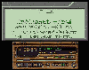

Winamp应该是使用最广泛的MP3播放工具。MP3以体积小、音质高而受到电脑迷、音乐迷的欢迎。像我的机器里就常驻MP3歌曲有近百首！闲时泡杯香茶，斜躺在休闲椅上，闭目聆听自己喜欢的MP3歌曲，真乃人生一大快事也！
不过，听MP3还是有一点比较麻烦：自己熟悉的歌倒也罢了，对于那些刚down下来的新歌，只觉得曲子优美，唱得也不错，就是很多地方不知道唱的什么词，就算找到一个歌词，也需要重新开一个窗口看，还是很不方便。近日，在网上逛时，终于找到了一个好东东——LyricsMate。这是个免费的中文软件，现在的最新版是LyricsMate
7.00 beta（据介绍说还支持CD及MIDI），在http://www.lotof.com/lyrics/download/plm700b.zip下载。下载后的zip文件只有168KB，将其解压到一个目录之中，执行LyricsMate.exe文件，它可能会提示你没找到winamp，此时可千万不要惊慌，点击“确定”，就进入了设置菜单，只要将其默认的Winamp目录和歌词目录指向你电脑里的相应目录就行了，非常简单。设置完成后点“关闭”，就自动启动Winamp。播一首动听的歌曲，在显示歌词的面板上按下鼠标右键，选择“为当前歌曲指定歌词”，当然了，你也必须有相对应的歌词文件，然后歌曲的歌词就会以卡拉OK方式上滚，看看，感觉不错吧（如图）！
最后还有一点，要歌词的话，还是到http://www.lotof.com/lyrics/index.htm去，这个站点的名字就叫“好多歌词”。真是名副其实，这里的歌词非常全，不管是中文还是英文歌词，你想要的这里基本上都有，歌词文件的默认格式的后缀名为lrc,也可将它存为文本格式。还写什么，快来吧！
（湖南 李霓） |